Derdini anlat, gerisini biz ayarlayalım.
anında sağlık, evde bakıma ihtiyaç duyan hastayı hemşire, fizyoterapist ve doktorla buluşturan yapay zekâ destekli bir eşleştirme platformu.
GAZİ AI TECH 2026, Sağlık alanı başvurusu. İzmir'in gerçek yol ağıyla çalışan bir prototip; hasta ve çalışan verileri sentetiktir.
Evde bakım ihtiyacı büyüyor, ulaşmak hâlâ zor.
Pansuman, serum, sonda bakımı ya da fizyoterapi gereken bir hastanın yakını bugün tek tek arama yapıyor. Kimin, ne zaman, hangi ücretle geleceği belirsiz; işlemden önce hekim planı ya da reçete gerekip gerekmediği çoğu zaman bilinmiyor.
Öbür yanda sağlık çalışanlarının saatleri dağınık talepler yüzünden boş kalıyor. Talebi en yakın kişiye iletmek de yetmiyor: en yakındaki kişi o an meşgul olabilir ya da yanıt vermeyebilir.
Bir talebin yolculuğu
Aşağıdaki ekranlar uygulamanın kendisinden. Kaydırdıkça hastanın telefonunda neler olduğunu göreceksin.
-
Kendi sözleriyle anlatır
Hasta ya da yakını derdini yazarak ya da sesli asistana konuşarak anlatır; yara gibi dışarıdan görünen bir durumda fotoğraf da ekleyebilir. Asistan en fazla üç soruyla eksik bilgiyi tamamlar. "Direkt doktora bağla" denirse sorular atlanır.
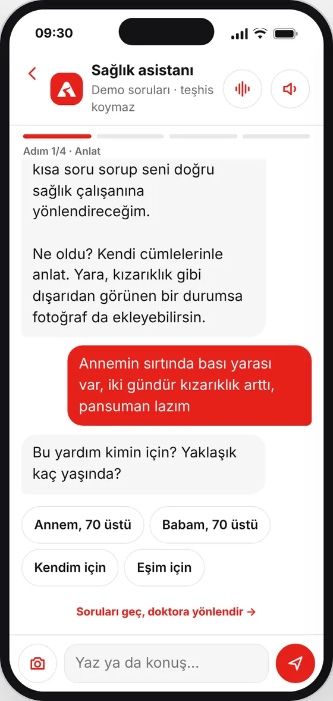
-
Yaşlılar için el değmeden
Sesli asistan, telefonla konuşur gibi çalışır: konuşmanın bittiğini sessizlikten anlar, yanıtı Türkçe seslendirir ve tekrar dinler. Yöresel ağızlar için konuşma tanıma Whisper ile yapılır; küreye dokunarak asistanın sözü kesilebilir.
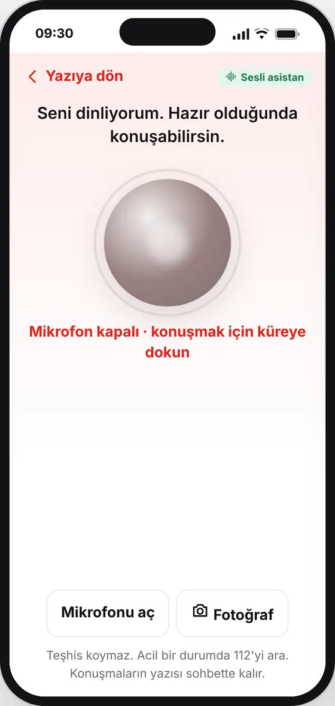
-
Acil belirti varsa randevu yok, 112 var
Konuşma boyunca bir kural motoru acil belirtileri izler. Göğüs ağrısı, nefes darlığı ya da bilinç kaybı gibi bir durumda randevu akışı durur; 112 ve en yakın acil servisler gösterilir. Bu kararı yapay zekâ değil, kaynaklı tıbbi kurallar verir.
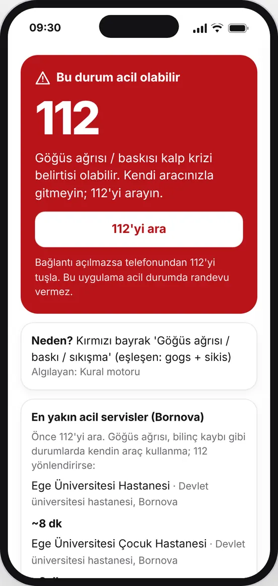
-
Doğru hizmete, doğru mesleğe
Acil durum yoksa sistem hizmeti ve mesleği mevzuata göre belirler. Hemşire ve fizyoterapist gibi meslekler hekim planıyla çalışır; plan yoksa önce doktorla görüntülü görüşme açılır. Kayıtlı adresler sayesinde adres her seferinde yazılmaz.
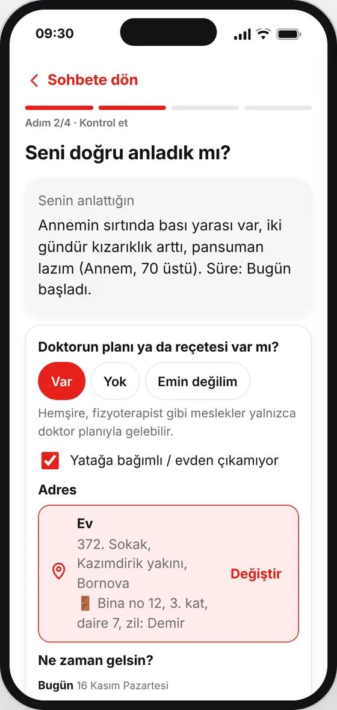
-
Üç kişiye sorulur, teklif gelir
Bildirim modeli talebi en yakın kişiye değil, beş dakika içinde teklif verme olasılığı en yüksek üç sağlık çalışanına gönderir. Yapay zekâ bir fiyat önerir, çalışanlar bunun yüzde on yakınında teklif verir. Hasta toplam ücreti, geliş saatini ve deneyimi görerek seçer. Çalışan reddederse ya da iptal ederse, uygulama tek dokunuşla aynı gün için başka bir uygun kişi önerir.
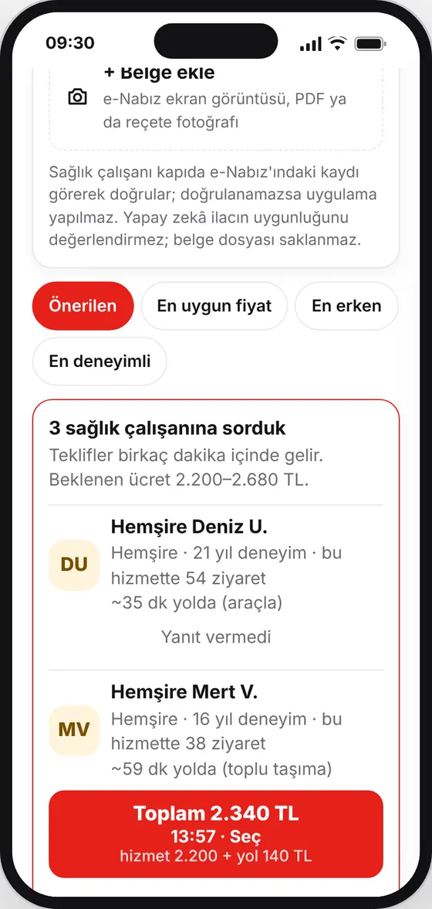
-
Yoldaki çalışanı haritada görür
Randevu kesinleşince hasta, çalışanın neyle geldiğini (araç ya da ESHOT ve İZBAN) ve tahmini varışı İzmir'in gerçek sokak ağı üzerinde izler. Çalışan aynı bölgede başka bir ziyarete gidiyorsa yol tasarrufu indirime dönüşür.
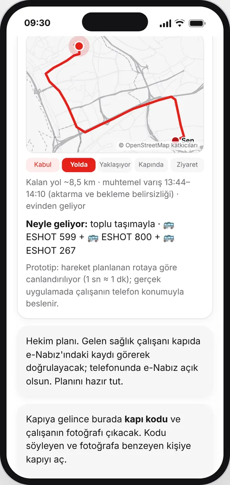
-
Kapıda kod, ziyarette güvenlik
Kapıya gelen kişi 4 haneli kodu söyler, hasta kodu ve fotoğrafı eşleştirir. Reçeteli işlemlerde sağlık çalışanı e-Nabız'daki reçete kaydını kontrol eder. Ziyaret, hastanın verdiği puanla kapanır.
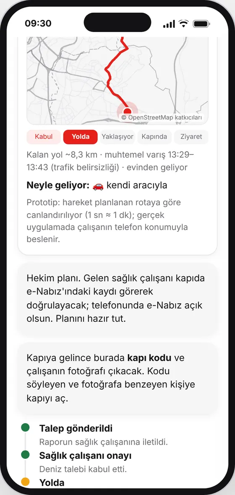
Sağlık çalışanının telefonunda
Çalışan, boş saatlerine ve rotasına uyan işleri görür. Her talep, hastanın anlattıklarından hazırlanmış bir raporla gelir.
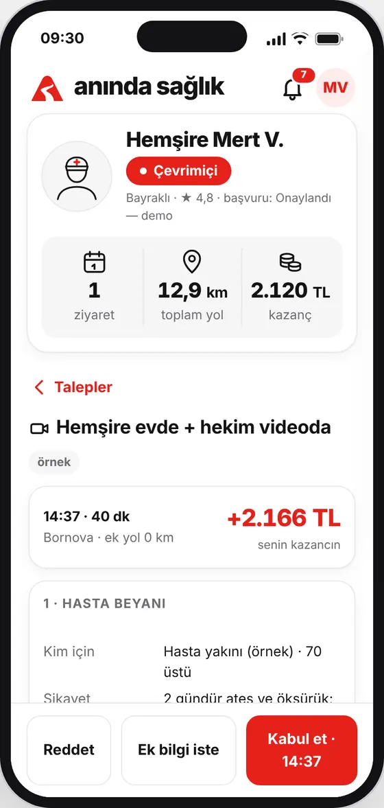
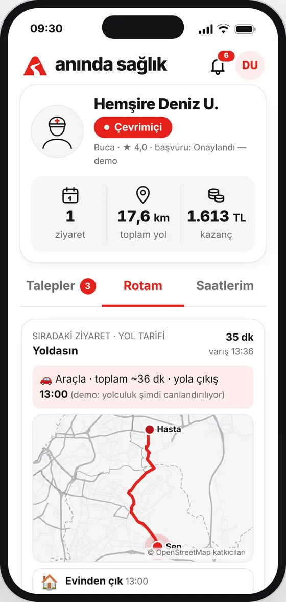
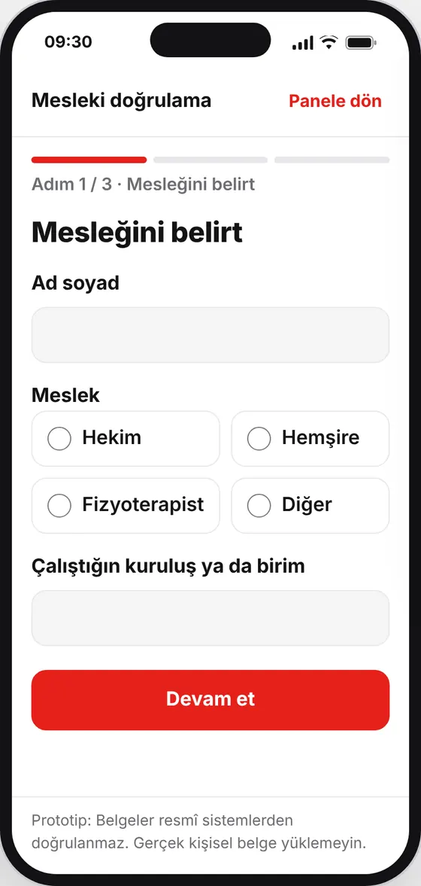
Model anlar, protokol karar verir.
Yapay zekâ projede belirli işleri yapar. Teşhis koymaz; acil kararı her zaman kurallardadır.
- Konuşmayı anlarDil modeli hastanın kendi sözlerini, yöresel ağız dahil, anlar ve eksik bilgiyi sorar.
- Acil kontrolü (kural motoru)16 kırmızı bayrak, olumsuzluk ve zaman ifadeleriyle birlikte değerlendirilir. "Göğüs ağrım yok" acil sayılmaz, "nefesi yok" sayılır.
- Raporu yazar ve denetlerRapor, kullanıcının söyledikleriyle karşılaştırılır; söylenmemiş yaş, hastalık ya da ilaç rapordan çıkarılır, "bilmiyorum" asla "yok" olmaz.
- Hizmet ve meslek (mevzuat kuralları)Hekim planı ya da reçete gereken hizmetler kaynaklı kurallarla belirlenir.
- Kime bildirim gideceğini seçerLojistik regresyon modeli, her aday için "bildirim giderse beş dakika içinde uygun teklif verir mi" olasılığını 12 özellikten hesaplar; yol, iş yükü ve bildirim yüküyle birlikte üç kişi seçilir.
- Fiyat önerir, reçeteyi okurÖnerilen fiyat, modelin kabul olasılıklarına göre hesaplanır. Reçete fotoğrafındaki alanlar okunur ve ön kontrolden geçer.
Hem hastayı hem sağlık çalışanını koruyan akış
Evde sağlıkta güven iki yönlüdür: hasta kapıya gelen kişiden, çalışan da girdiği evden emin olmak ister.
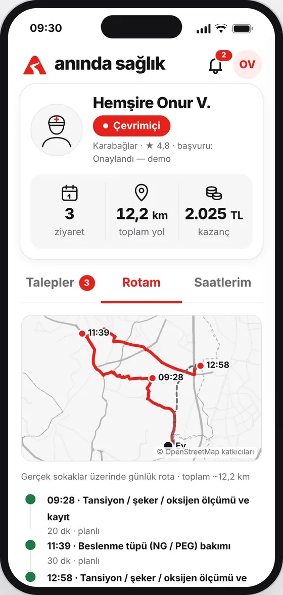
Güvenli Ziyaret
Kapı kodu ve fotoğraf eşleşmesi, adrese yakınlık kontrolü, ziyaret boyunca "Her şey yolunda mı?" kontrolleri. Yanıt gelmezse uyarı zinciri işler; gizli SOS ve baskı PIN'i vardır.
Belge ve reçete kontrolü
Barkodlu diploma ve tescil belgesi, e-Reçete numarası ve belgenin ön kontrolü, görevli incelemesi ve kapıda e-Nabız kontrolü birlikte çalışır. Uygulama resmî sistemleri kendisi sorgulamaz.
Puanlar adil
Hasta ziyareti ya da görüşmeyi puanlar. Çalışan tek bir hastanın kaç yıldız verdiğini görmez; puanlar birkaç değerlendirme birikince ortalamaya katılır.
Az veri
T.C. kimlik numarası istenmez, reçete hastanın onayıyla paylaşılır, belge dosyaları saklanmaz, konum yalnızca ziyaret sırasında kaydedilir.
Doktor eve gitmez, görüntülü bağlanır.
Doktorlar yalnızca görüntülü görüşmeyle hizmet verir. Evden çıkamayan hastaya hemşire gider, doktor görüşmeye görüntülü katılır. Görüntülü randevularda harita, rota ve yol ücreti yoktur; takvimde ise çakışma önlenir.
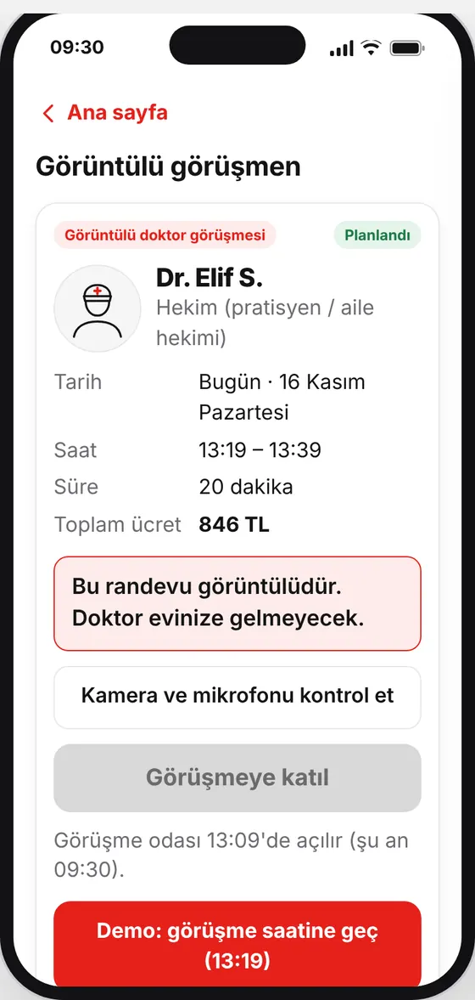
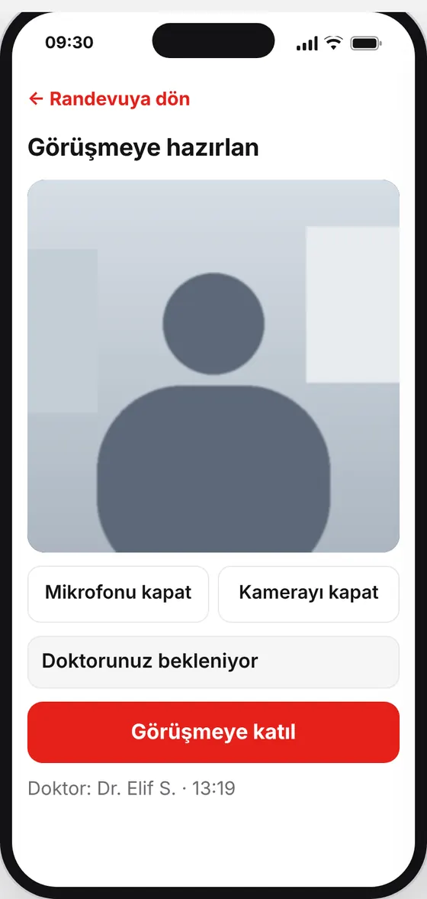
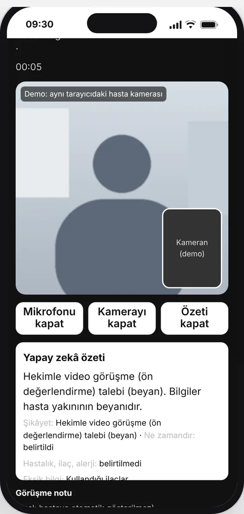
Prototipte görüntülü görüşme bir demodur: iki cihaz arasında gerçek görüntü gitmez ve ekran bunu "Demo görüşme" etiketiyle belirtir. Gerçek görüşme için WebRTC, bir sinyal sunucusu ve TURN sunucusu ile Bakanlıkça yetkilendirilmiş bir uzaktan sağlık altyapısı gerekir.
Neyle yaptık?
Uygulama telefon tarayıcısında açılır, kurulum gerektirmez. İşletme maliyetini düşük tutmak için ücretsiz katmanı olan açık modeller ve sunucusuz altyapı seçtik.
Arayüz
JavaScript ile tek dosyalık web uygulaması; hasta, hemşire ve doktor için ayrı ekranlar. Yazılar en az 17 px, düğmeler en az 48 px.
Karar mantığı
Triyaj, eşleştirme ve rota paylaşımı Python'da yazıldı, tarayıcı için JavaScript'e aktarıldı. İki sürümün aynı sonucu verdiği her değişiklikte test edilir.
Bildirim modeli
Python ve scikit-learn ile İzmir simülasyonunda eğitilmiş lojistik regresyon; tarayıcıda katsayılarıyla çalışır.
Dil ve ses
Groq üzerindeki açık modeller: sohbet için gpt-oss-120b (yedekleri gpt-oss-20b ve Qwen), konuşma tanıma için Whisper large v3, reçete fotoğrafı için Qwen.
Sunucu
Cloudflare Workers. API anahtarı yalnızca sunucuda gizli değişken olarak durur; tarayıcıya hiç gelmez.
Harita ve ulaşım
OpenStreetMap yol ağı ve adresleri, TomTom 2025 saatlik trafik endeksi, ESHOT ve İZBAN tarifeleri (GTFS); sokak rotası Dijkstra ile çizilir.
Neler çalışıyor, neler demo?
Bir prototipin neyi gerçekten yaptığını açıkça yazmak istedik.
| Özellik | Durum | Not |
|---|---|---|
| Yazılı ve sesli asistan, rapor | Çalışıyor | Canlı yapay zekâ sunucusuyla; sunucuya ulaşılamazsa demo sorularıyla sürer. |
| Acil kural motoru | Çalışıyor | Kaynaklı kırmızı bayraklar; 112 düğmesi gerçek arama başlatır. |
| Eşleştirme, bildirim modeli, fiyat önerisi | Çalışıyor | Model simülasyon verisiyle eğitildi; gerçek yanıt verisiyle yeniden eğitilecek. |
| Harita, rota, toplu taşıma | Çalışıyor | Gerçek İzmir yol ağı; canlı takip hızlandırılmış canlandırmadır. |
| Belge ve reçete ön kontrolü | Çalışıyor | Dosya, barkod ve numara kontrolü yapılır; reçete fotoğrafını yapay zekâ okur. Resmî sistemlere sorgu yapılmaz; son kararı görevli verir. |
| Hasta ve sağlık çalışanı verisi | Sentetik | Gerçek kişisel veri kullanılmaz; gerçek sağlık bilgisi girilmemeli. |
| Görüntülü görüşme | Demo | Akış ve ekranlar hazır; iki cihaz arası gerçek bağlantı yok. |
| Güvenli Ziyaret aramaları, ödeme | Demo | Uyarı zincirindeki aramalar ve ödeme simüledir. |
| İki ayrı telefon arasında talep aktarımı | Demo | Hasta ve çalışan ekranı aynı tarayıcıda yan yana çalışır; ortak veritabanı pilotta açılacak. |
Ekipçe yazılan 67 senaryodaki acil vakaların tamamı yakalandı.
Geliştirmede görülmeden hazırlanan gizli sette ilk denemede 24 doğru sonuç; bulunan hatalar düzeltilince 30.
Sesli ve yazılı konuşma kataloğu; uçtan uca tarayıcı testleri her değişiklikte çalışır.
Bu sonuçlar klinik kanıt değildir; pilotta gerçek kullanımla ve bir hekimle yeniden doğrulanacak.
Sırada ne var?
- Prototip
Hasta ve çalışan uygulaması, İzmir simülasyonu, bildirim modeli ve test setleri tamamlandı.
- Hazırlık
Etik kurul onayı, KVKK aydınlatma metinleri ve ruhsatlı, uzaktan sağlık izni olan bir sağlık kuruluşuyla iş birliği.
- Bornova pilotu
4–6 hafta, 10–20 gönüllü sağlık çalışanı ve 30–50 hasta ya da yakını. İlk teklif süresi, iptal oranı, puan ve yol mesafesi ölçülür.
- Model güncellemesi
Pilot sonuçları simülasyonla karşılaştırılır; bildirim modeli gerçek yanıt verisiyle yeniden eğitilir.
Üç dakikada dene
Uygulama telefonda da bilgisayarda da açılır. Bilgisayarda "İkisi yan yana" görünümü hasta ve sağlık çalışanı telefonunu birlikte gösterir.
hasta + hemşire
Yalnız hastahasta / 1234
Yalnız hemşirehemsire / 1234
Yalnız doktordoktor / 1234
Hesaplar demo içindir; şifre hiçbir yere gönderilmez.
- Hasta tarafında Anlatmaya başla'ya bas ve bir şikâyet yaz, örneğin "Annemin sırtında yara var, pansuman lazım".
- Soruları yanıtla, bir saat seç ve Seçenekleri gör'e bas. Üç sağlık çalışanından teklif gelir.
- Yapay zekâ neyi iyileştiriyor? kutusunu açarak aynı talebi klasik yöntemle karşılaştır.
- Bir teklifi seç; sağdaki telefonda talebin yapay zekâ raporunu ve rotayı gör.
- Acil akışı görmek için yeni bir sohbette "Babamın göğsü sıkışıyor, nefes alamıyor" yaz.
- Görüntülü görüşme için ana sayfada Görüntülü doktor'u seç; Demo: görüşme saatine geç ile odaya gir.
Ekip
İzmir simülasyonu, bildirim modeli, harita ve teklif akışı
Triyaj, hasta ve çalışan uygulaması, sesli asistan, görüntülü görüşme
Hizmet fiyatlarının piyasa araştırması
Mesleki ve reçete doğrulama